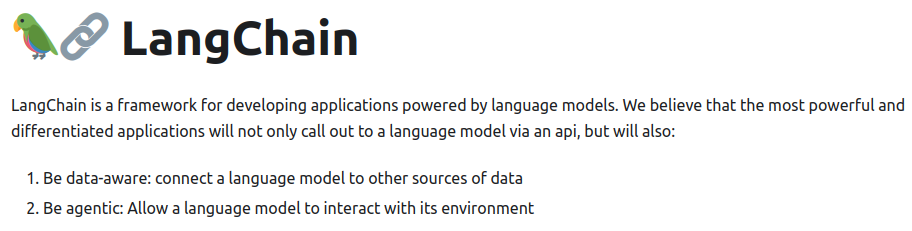

L’ELABORAZIONE DEL LINGUAGGIO NATURALE PER L’INGEGNERIA
Capire e utilizzare l'NLP nella pratica professionale
Ordine degli Ingegneri 30/9/2023
Como Giorgio Sidari
Relatore
.
Giorgio Sidari
Software & ML Engineer
.
www.sidari.it
www.linkedin.com/in/sidari
@ideaferace@mastodon.uno
Obiettivi
Panoramica delle possibilità
In italiano
Produttività individuale
Prospettiva industriale
Sommario
Definizione e cenni storici
Problemi pratici
Strumenti
Approfondimento su LLM
Privacy e proprietà intellettuale
NLP
Definizione e cenni storici
Tratta l'interazione tra i computer e il linguaggio umano Wikipedia
Perché elaborare il linguaggio?
I testi sono ovunque
Possiamo sfruttarli meglio
Comprensione del linguaggio (NLU)
Come rendere utilizzabili gli input testuali?
Generazione del linguaggio (NLG)
Come produrre testi corretti e sensati?
Trascrizione e sintesi vocale
NLP simbolica e grammaticale
Anni 40: Scarsi risultati
Teoria linguistica (Chomsky)
Anni 60: Padronanza di domini specifici
Anni 70: Utilizzo di ontologie
NLP statistica
Diffusione e aumento della potenza di calcolo
Anni 90: Grande disponibilità di dati
.
N-grammi T9
NLP neurale/vettoriale
Reti neurali per compiti statistici
Raggruppamento in base al contesto → Semantica
جدار المحطّة أبيض
جدار الغرفة أبيض
جدار المنزل أبيض
Word2Vec (2013)
Word2Vec

Somiglianza

Additività
Gioco: Semantle
NLP con transformer (2017)

Transformer
L'ecosistema dei modelli linguistici
e non solo
Ricerca ed estrazione di informazioni da documenti
Classificazione
Monitoraggio della reputazione
"Da abbonato a ##### credo che il servizio che stanno offrendo faccia schifo"
"@utente Io ci ho preso #### e ####. Ottima esperienza e prezzi buoni"
Capire le intenzioni
Tradurre una frase in un comando
"Voglio parlare con un operatore!" ü§¨
"Spegni la luce in cucina"
"Prenota una sala per domani alle 10"
Confronto di testi
Somiglianza
Pertinenza
Ricerca di risposte in un testo
Dato un tema...
rintracciare i passi che ne parlano
Generazione di domande relative a un testo
Motori di ricerca
Quiz
Domande guida
Generazione di testi
Chat
Report
Brochure, descrizione prodotti


 NLLB distilled 600M (Meta)
NLLB distilled 600M (Meta)
Offerte
Riassunto
Executive summary
Screening documenti
Traduzione
Scouting di prodotti
Rassegna stampa
Contrattualistica
Strumenti
per l'analisi del sentimento
il riassunto automatico
la traduzione
...
...ed esempi pratici!
Librerie di NLP
| Libreria | Linguaggio | Autore |
|---|---|---|
| SpaCy | Python | Explosion.ai |
| NLTK | Python | nltk.org |
| CoreNLP | Java | Stanford |
| Stanza | Python | Stanford |
| ... | ... | ... |
SpaCy
Documentazione SpaCy
SpaCy
Documentazione SpaCy
SpaCy
Analisi logica e grammaticale
Documentazione SpaCy
SpaCy
Estrazione entità
Documentazione SpaCy
ESEMPIO: Analisi del sentimento
Flusso di post dai social
Selezione dei post rilevanti
Etichettatura
Report
Chatbot (essenziale)
Frase dell'utente
Individuazione dell'intento
Estrazione delle entità
Azione e risposta
Framework focalizzati sui transformer
Come sfruttare dati non strutturati?
Focus su indicizzazione
Grande offerta cloud
Haystack
Homepage Haystack
Haystack
Homepage Haystack
ESEMPIO: Trovare risposte in un testo
ESEMPIO: Domande relative a testi
- Linee guida
- Generazione di test
ESEMPIO: Riassunto
Brani più significativi
ESEMPIO: Traduzione
Framework focalizzati su LLM
Supporto nativo per LLM
Pipeline
LangChain

Documentazione LangChain
LangChain
Documentazione LangChain
La generazione di testo
NLG tradizionale
Produzione di template:
Meteo
Report finanziari
.
Didascalie
I grandi modelli linguistici
Amatriain et al. - 2023
I grandi modelli linguistici
Amatriain et al. - 2023
ESEMPIO: Sequenza di compiti
Amatriain et al. - 2023
ESEMPIO: Sequenza di compiti
Amatriain et al. - 2023
Allucinazioni
ESEMPIO: Sequenza di compiti
Amatriain et al. - 2023
Vantaggi degli LLM
Competenti, fluenti
Versatili
Poliglotti (o quasi)
Limitazioni degli LLM
Confabulano
Non sanno contare
Non sanno fare deduzioni
Limitazioni degli LLM
Bilancio (provvisorio!) degli LLM
Ispirazione creativa
Bozze documenti
Recupero informazioni (ma deve essere validato)
Supporto alla decisione
Protezione di dati personali e proprietà intellettuale
Scenari d'uso dell'NLP
Cloud
On prem
Edge
Funzionalità e condizioni - Confronto
| Prestazioni | Controllo dei dati | Costi fissi | Costi variabili | |
|---|---|---|---|---|
| Cloud | Massime | Minimo | Contenuti | Elevati |
| On-prem | Medie-Elevate | Limitato-Buono | Elevati (HW) | Contenuti |
| Edge | Minime | Massimo | Elevati (HW) | Contenuti |
Valutazioni
Visti i trade-off tra le soluzioni...
| Cloud | Sperimentazione o alto valore aggiunto. Bassa PI e privacy |
| On prem | Ambiente di produzione per volumi sostenuti |
| Edge | Compiti leggeri, focalizzazione su PI e privacy |
Valutazioni
Il vantaggio dei modelli grandissimi è evanescente
Grazie
.
Trovate questa presentazione su
Contatti
.
Giorgio Sidari
Software & ML Engineer
.
www.sidari.it
www.linkedin.com/in/sidari
@ideaferace@mastodon.uno
Link
.
- Huggingface https://huggingface.co
- SpaCy https://spacy.io
- Haystack https://docs.haystack.deepset.ai
- LangChain https://docs.langchain.com
- Text Generation Web UI https://github.com/oobabooga/text-generation-webui